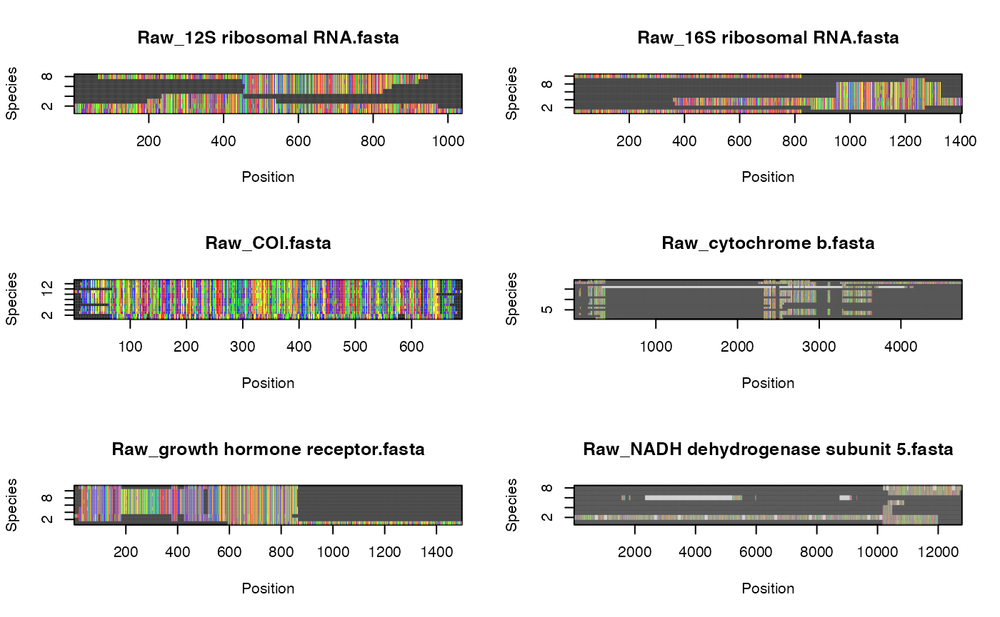

Introduction to the phruta R package
Cristian Román-Palacios
First created on 2021-07-30. Updated on 2022-05-30
Source:vignettes/Brief_Intro_phruta.Rmd
Brief_Intro_phruta.RmdTable of Contents
What is phruta
The phruta R package is designed to simplify the basic phylogenetic pipeline and allow scientists from different backgrounds to assemble their own phylogenies. All code in phruta is run within the same program (R) and data from intermediate steps are saved locally in independent folders. Furthermore, all code is run within the same environment which increases the reproducibility of your analysis. phruta looks for potentially (phylogenetically) relevant gene regions for a given set of taxa, retrieves gene sequences, could combine newly downloaded and local gene sequences, performs sequence alignments, phylogenetic inference, and tree dating. phruta is also able to perform basic phylogenetic inference under RAxML on the resulting sequence alignments. The current release allows users to conduct tree dating based on secondary calibrations. phruta is essentially a wrapper for alternative R packages and software.
Functions in phruta
The current release of phruta includes a set of eight major functions. All eight functions form a pipeline within phruta to output a time-calibrated phylogeny. However, users interested in using their own files at any stage can run each function independently.
Note that all the functions for which their primary output are sequences (aligned or unaligned) are listed under sq.*. All the files that output phylogenies (time-calibrated or not) are listed under tree.*.
First, the distribution of gene sampled for a given organism or set of taxa can be explored using the
acc.gene.samplingfunction. This function will return a table that summarizes either the distribution of genes sampled for the search term in general or specifically across species.Second, given a list of target organisms, users can retrieve a list of accession numbers that are relevant to their search using
acc.table.retrieve. Instead of directly downloading sequences from genbank (seesq.retrieve.directbelow), retrieving accession numbers allow users to have more control over the sequences that are being used in the analyses. Note that users can also curate the content of the dataset obtained usingsq.retrieve.direct.Third, users should download gene sequences. Sequences can be download using the
sq.retrieve.indirectfrom the accession numbers retrieved before using theacc.table.retrievefunction. This is the preferred option withinphruta. Additionally, users can directly download gene sequences using thesq.retrieve.directfunction. Bothsq.retrieve.indirectandsq.retrieve.directfunctions save gene sequences infastafiles that will be located in a new directory named0.Sequences.Fourth,
sq.addallows users to include local sequences to those retrieved from genbank in the previous step. This function saves all the resultingfastafiles in two directories, combined sequences in0.Sequencesand local sequences in0.AdditionalSequences(originally downloaded sequences are moved to0.0.OriginalDownloadedat this step). Note thatsq.addis optional.Fifth, the
sq.curatefunction filters out unreliable sequences based on information listed in genbank (e.g. PREDICTED) and on taxonomic information provided by the user. Specifically, this function retrieves taxonomic information from the Global Biodiversity Information Facility (GBIF) database’s taxonomic backbone (see alternatives in the advanced vignette tophruta). If a given species belongs to a non-target group, this species is dropped from the analyses. This function automatically corrects taxonomy and renames sequences.Sixth,
sq.alnperforms multiple sequence alignment onfastafiles. Currently,phrutauses theDECIPHERR package, here. This package allows for adjusting sequence orientation and masking (removing ambiguous sites).
The final two functions in phruta focus on tree inference and dating. These two functions depend on external software that needs to be installed (and tested) before running. Please make sure both RAxML and PATHd-8 or treePL are installed and can be called within R using the system() function. Note that you can choose between PATHd-8 and treePL. More details on how to install RAxML are provided in the phylogenetic vignette of phruta. Similarly, we provide details on how to install PATHd-8 and treePL in the same vignette.
-Seventh, the tree.raxml function allows users to perform tree inference under RAxML for sequences in a given folder. This is a wraper to ips::raxml and each of the arguments can be customized. The current release of phruta can manage both partitioned and unpartitioned analyses. Starting and constrained trees are allowed.
-Eith, tree.dating enables users to perform time-calibrations of a given phylogeny using geiger::congruify.phylo. phruta includes a basic set of comprehensively sampled, time-calibrated phylogenies that are used to extract secondary calibrations for the target phylogeny. Note that sampling in those phylogenies can be examined using data(SW.phruta). Please make sure you have at least two groups in common with each of the phylogenies. Similarly, users can choose to run either PATHd-8 or treePL.
Intro tutorial: Clade names to sequence alignments
Let’s create a phylogeny for a few mammal clades. Assume that we need to build a tree for the following three genera: Felis, Vulpes, and Phoca. All three genera are within Carnivora. Both Felis and Vulpes are classified in different superfamilies within Fissipedia and Phoca is part of another suborder, Pinnipedia. We’re going to root our tree with another mammal species, a Chinese Pangolin ( Manis pentadactyla). Users can select additional target species, however, for simplicity, we will run the analyses using three genera in the ingroup and a single outgroup species.
So far, we have decided the taxonomic make of our analyses. However, we also need to determine the characteristics of the molecular dataset that we would like to assemble. Fortunately, mammals are extensively studied and a comprehensive list of potential gene regions to be analized is already available. For instance, we could use same gene regions as in Upham et al (2009). Nevertheless, for this tutorial, we will simply try to find the gene regions are well sampled for the target taxa. I believe that figuring out the best sampled gene regions in genbank, instead of providing names, is potentially more valuable when working with poorly studied groups. Before we move on, please make sure that you you have set a working directory for this project as all the files will be saved to the current working directory.
Let’s start by loading phruta!
## Registered S3 methods overwritten by 'TreeDist':
## method from
## as.matrix.ClusterTable TreeTools
## print.ClusterTable TreeTools
## summary.ClusterTable TreeTools## ✅ Thank you for using the {phruta} R package! ✅
##
## 🙂Happy coding!!🙂
## 🍊🍍🍐🥝🥥🌶🥑🍒🥭Now, let’s look for the gene regions that are sampled for our target taxa. For this, we will use the gene.sampling.retrieve function in phruta. The resulting data.frame, named gs.seqs in this example, will contain the list of full names for genes sampled in genbank for the target taxa.
gs.seqs <- gene.sampling.retrieve(organism = c("Felis", "Vulpes", "Phoca", "Manis_pentadactyla"),
speciesSampling = TRUE)For the search terms, phruta was able to retrieve the names for 1311 gene regions.
| Gene | Sampled in N species | PercentOfSampledSpecies |
|---|---|---|
| cytochrome b | 23 | 74.19355 |
| NADH dehydrogenase subunit 5 | 13 | 41.93548 |
| 12S ribosomal RNA | 11 | 35.48387 |
| 16S ribosomal RNA | 11 | 35.48387 |
| cytochrome c oxidase subunit I | 11 | 35.48387 |
| growth hormone receptor | 11 | 35.48387 |
The gene.sampling.retrieve provides an estimate of the number of species in genbank (matching the taxonomic criteria of the search term) that have sequences for a given gene region. However, this estimate is only as good as the annotations for genes deposited in genbank.
From here, we will generate a preliminary table summarizing accession numbers for the combination of taxa and gene regions that we’re interested in sampling. In fact, not all these accession numbers are expected to be in the final (curated) molecular dataset. Using the acc.table.retrieve function, we will assemble a species-level summary of accession numbers (hence the speciesLevel = TRUE argument). For simplicity, this tutorial will focus on sampling gene regions that are sampled in >30% of the species (targetGenes data.frame).
targetGenes <- gs.seqs[gs.seqs$PercentOfSampledSpecies > 30,]
acc.table <- acc.table.retrieve(
clades = c('Felis', 'Vulpes', 'Phoca'),
species = 'Manis_pentadactyla' ,
genes = targetGenes$Gene,
speciesLevel = TRUE
)The acc.table object is a data.frame that is later on going to be used for downloading locally the relevant gene sequences. In this case, the dataset includes the following information:
| Species | Ti | Acc | gene |
|---|---|---|---|
| Felis catus | Felis catus voucher DHI307 NADH dehydrogenase subunit 5 (ND5) gene, partial cds; NADH dehydrogenase subunit 6 (ND6) gene, complete cds; tRNA-Glx gene, complete sequence; and cytochrome b (CytB) gene, partial cds; mitochondrial | KP279546 | cytochrome b |
| Felis silvestris | Felis silvestris isolate FsilT1283 cytochrome b (cytb) gene, partial cds; mitochondrial | KJ193344 | cytochrome b |
| Felis chaus | Felis chaus cytochrome b (CytB) gene, partial cds; mitochondrial | KJ634463 | cytochrome b |
| F.domesticus mitochondrial | F.domesticus mitochondrial cytochrome b gene | X82296 | cytochrome b |
| Vulpes corsac | Vulpes corsac isolate SH21 cytochrome b (CYTB) gene, complete cds; mitochondrial | MT795179 | cytochrome b |
| Vulpes vulpes | Vulpes vulpes isolate Kharkiv10 cytochrome b (cytb) gene, complete cds; mitochondrial | EF689062 | cytochrome b |
| Vulpes zerda | Vulpes zerda isolate X161349 cytochrome b (Cytb) gene, partial cds; mitochondrial | MH854561 | cytochrome b |
| Vulpes cana | Vulpes cana isolate B.F.Y3 cytochrome b (cytb) gene, partial cds; mitochondrial | KU378587 | cytochrome b |
| Vulpes rueppellii | Vulpes rueppellii isolate R.F.Y6 cytochrome b (cytb) gene, partial cds; mitochondrial | KU378373 | cytochrome b |
| Vulpes lagopus | Vulpes lagopus haplotype 5 cytochrome b (cytb) gene, partial cds; mitochondrial | KX093945 | cytochrome b |
| Vulpes ferrilata | Vulpes ferrilata haplotype 1 cytochrome b (cytb) gene, partial cds; mitochondrial | EU872065 | cytochrome b |
| Vulpes macrotis | Vulpes macrotis cytochrome b (cytb) gene, mitochondrial gene encoding mitochondrial protein, partial cds | AF028157 | cytochrome b |
| Vulpes pallida | Vulpes pallida haplotype PMa2 cytochrome b (cytb) gene, partial cds; mitochondrial | KJ597964 | cytochrome b |
| V.vulpes mitochondrial | V.vulpes mitochondrial DNA for cytochrome b (complete sequence) | X94929 | cytochrome b |
| Phoca largha | Phoca largha PLCBRe4 mitochondrial cytb gene for cytochrome b, partial cds | LC466149 | cytochrome b |
| Pagophilus groenlandicus | Pagophilus groenlandicus cytochrome b gene, partial cds; mitochondrial gene for mitochondrial product | AF200491 | cytochrome b |
| Phoca groenlandica | Phoca groenlandica cytochrome b (cytb) gene, complete cds; mitochondrial | GU174609 | cytochrome b |
| Phoca fasciata | Phoca fasciata cytochrome b (cytb) gene, complete cds; mitochondrial | GU167294 | cytochrome b |
| Phoca vitulina | Phoca vitulina mitochondrial cytochrome b gene, partial cds | L19127 | cytochrome b |
| P.vitulina mitochondrial | P.vitulina mitochondrial cytochrome b gene | X82306 | cytochrome b |
| P.largha mitochondrial | P.largha mitochondrial cytochrome b gene | X82305 | cytochrome b |
| P.groenlandica mitochondrial | P.groenlandica mitochondrial cytochrome b gene | X82303 | cytochrome b |
| P.fasciata mitochondrial | P.fasciata mitochondrial cytochrome b gene | X82302 | cytochrome b |
| Manis pentadactyla | Manis pentadactyla isolate S105 cytochrome b (cytb) gene, partial cds; mitochondrial | MW197468 | cytochrome b |
| Felis catus | Felis catus voucher M29 NADH dehydrogenase subunit 5 (ND5) gene, partial cds; NADH dehydrogenase subunit 6 (ND6) gene, complete cds; tRNA-Glx gene, complete sequence; and cytochrome b (CytB) gene, partial cds; mitochondrial | KP279580 | NADH dehydrogenase subunit 5 |
| Felis silvestris | Felis silvestris isolate W93 NADH dehydrogenase subunit 5 (ND5) gene, partial cds; mitochondrial | KP699691 | NADH dehydrogenase subunit 5 |
| Vulpes lagopus | Vulpes lagopus ATP synthase F0 subunit 6 (ATP6), ATP synthase F0 subunit 8 (ATP8), cytochrome c oxidase subunit I (COX1), cytochrome c oxidase subunit II (COX2), cytochrome c oxidase subunit III (COX3), cytochrome b (CYTB), NADH dehydrogenase subunit 1 (ND1), NADH dehydrogenase subunit 2 (ND2), NADH dehydrogenase subunit 3 (ND3), NADH dehydrogenase subunit 4 (ND4), NADH dehydrogenase subunit 4L (ND4L), and NADH dehydrogenase subunit 5 (ND5) genes, complete cds; mitochondrial | AH014073 | NADH dehydrogenase subunit 5 |
| Phoca groenlandica | Phoca groenlandica NADH dehydrogenase subunit 5 (ND5) gene, complete cds; mitochondrial gene for mitochondrial product | AY377376 | NADH dehydrogenase subunit 5 |
| Phoca fasciata | Phoca fasciata NADH dehydrogenase subunit 5 (ND5) gene, complete cds; mitochondrial | GU167331 | NADH dehydrogenase subunit 5 |
| Felis catus | Felis catus voucher N22b 12S ribosomal RNA gene, partial sequence; mitochondrial | KX786344 | 12S ribosomal RNA |
| Felis chaus | Felis chaus isolate G 12S ribosomal RNA gene, partial sequence; mitochondrial | KU963205 | 12S ribosomal RNA |
| Felis silvestris | Felis silvestris 12S ribosomal RNA gene, partial sequence; mitochondrial | KX002032 | 12S ribosomal RNA |
| Felis bieti | Felis bieti 12S ribosomal RNA gene, partial sequence; mitochondrial | AY773084 | 12S ribosomal RNA |
| Vulpes vulpes | Vulpes vulpes Vv1 mitochondrial gene for 12S ribosomal RNA, partial sequence | LC424764 | 12S ribosomal RNA |
| Vulpes lagopus | Vulpes lagopus isolate FRT12 12S ribosomal RNA gene, partial sequence; mitochondrial | KM224240 | 12S ribosomal RNA |
| Phoca fasciata | Phoca fasciata isolate 5888 12S ribosomal RNA gene, partial sequence; mitochondrial | GU174595 | 12S ribosomal RNA |
| Phoca largha | Phoca largha isolate 06spotted03 12S ribosomal RNA gene, partial sequence; mitochondrial | GU174591 | 12S ribosomal RNA |
| Manis pentadactyla | Manis pentadactyla 12S ribosomal RNA gene, partial sequence; and tRNA-Val gene, complete sequence; mitochondrial | AY012154 | 12S ribosomal RNA |
| Felis catus | Felis catus 16S ribosomal RNA gene, partial sequence; mitochondrial | AY011183 | 16S ribosomal RNA |
| Felis silvestris | Felis silvestris isolate A1 16S ribosomal RNA gene, partial sequence; mitochondrial | MF444948 | 16S ribosomal RNA |
| Felis libyca | Felis libyca 16S ribosomal RNA gene, mitochondrial gene for mitochondrial RNA, partial sequence | AF006395 | 16S ribosomal RNA |
| Felis nigripes | Felis nigripes 16S ribosomal RNA gene, mitochondrial gene for mitochondrial RNA, partial sequence | AF006399 | 16S ribosomal RNA |
| Felis margarita | Felis margarita 16S ribosomal RNA gene, mitochondrial gene for mitochondrial RNA, partial sequence | AF006397 | 16S ribosomal RNA |
| Felis chaus | Felis chaus 16S ribosomal RNA gene, mitochondrial gene for mitochondrial RNA, partial sequence | AF006393 | 16S ribosomal RNA |
| Vulpes vulpes | Vulpes vulpes voucher UAM:Mamm:24948 16S ribosomal RNA gene, partial sequence; mitochondrial | DQ334815 | 16S ribosomal RNA |
| Vulpes lagopus | Vulpes lagopus voucher UAM:Mamm:22740 16S ribosomal RNA gene, partial sequence; mitochondrial | DQ334814 | 16S ribosomal RNA |
| Vulpes ferrilata | Vulpes ferrilata voucher QTPNM 12112003 16S ribosomal RNA gene, partial sequence; mitochondrial | KC538826 | 16S ribosomal RNA |
| Manis pentadactyla | Manis pentadactyla 16S ribosomal RNA gene, partial sequence; mitochondrial | AY011188 | 16S ribosomal RNA |
| Felis silvestris | Felis silvestris voucher 77_Fe_sil cytochrome c oxidase subunit I (COX1) gene, partial sequence; nuclear copy of mitochondrial gene | KF297804 | cytochrome c oxidase subunit I |
| Felis catus | Felis catus voucher 191_Fe_cat cytochrome c oxidase subunit I (COX1) gene, partial sequence; nuclear copy of mitochondrial gene | KF297802 | cytochrome c oxidase subunit I |
| Felis chaus | Felis chaus cytochrome c oxidase subunit I (COI) gene, partial cds; mitochondrial | KJ634464 | cytochrome c oxidase subunit I |
| Vulpes corsac | Vulpes corsac isolate MGL-309 cytochrome c oxidase subunit I (COX1) gene, partial cds; mitochondrial | ON377297 | cytochrome c oxidase subunit I |
| Vulpes vulpes | Vulpes vulpes isolate EXT423_2020 cytochrome c oxidase subunit I (COX1) gene, partial cds; mitochondrial | OM980695 | cytochrome c oxidase subunit I |
| Vulpes lagopus | Vulpes lagopus isolate VL1 cytochrome c oxidase subunit I (COX1) gene, partial cds; mitochondrial | MT731651 | cytochrome c oxidase subunit I |
| Alopex lagopus | Alopex lagopus cytochrome c oxidase subunit I (COI) gene, partial cds; mitochondrial | AY894421 | cytochrome c oxidase subunit I |
| Vulpes macrotis | Vulpes macrotis cytochrome c oxidase subunit I (COI) gene, mitochondrial gene encoding mitochondrial protein, partial cds | AF028205 | cytochrome c oxidase subunit I |
| Vulpes zerda | Vulpes zerda cytochrome c oxidase subunit I (COI) gene, mitochondrial gene encoding mitochondrial protein, partial cds | AF028194 | cytochrome c oxidase subunit I |
| Phoca vitulina | Phoca vitulina vitulina isolate Atlantic harbor seal D cytochrome c oxidase subunit I (COX1) gene, partial cds; tRNA-Ser and tRNA-Asp genes, complete sequence; and cytochrome c oxidase subunit II (COX2) gene, complete cds; mitochondrial | GU733705 | cytochrome c oxidase subunit I |
| Manis pentadactyla | Manis pentadactyla pentadactyla isolate ASIZFZ002032 cytochrome c oxidase subunit I (COX1) gene, partial cds; mitochondrial | OM220069 | cytochrome c oxidase subunit I |
| Felis catus | Felis catus growth hormone receptor (GHR) gene, partial cds | DQ205829 | growth hormone receptor |
| Vulpes vulpes | Vulpes vulpes growth hormone receptor gene, exon 10 and partial cds | AY885401 | growth hormone receptor |
| Vulpes macrotis | Vulpes macrotis growth hormone receptor gene, exon 10 and partial cds | AY885400 | growth hormone receptor |
| Vulpes corsac | Vulpes corsac growth hormone receptor gene, exon 10 and partial cds | AY885399 | growth hormone receptor |
| Vulpes zerda | Vulpes zerda growth hormone receptor gene, exon 10 and partial cds | AY885393 | growth hormone receptor |
| Alopex lagopus | Alopex lagopus growth hormone receptor gene, exon 10 and partial cds | AY885379 | growth hormone receptor |
| Vulpes velox | Vulpes velox growth hormone receptor (GHR) gene, partial cds | DQ205838 | growth hormone receptor |
| Vulpes lagopus | Vulpes lagopus growth hormone receptor (GHR) gene, partial cds | DQ205837 | growth hormone receptor |
| Phoca vitulina | Phoca vitulina growth hormone receptor (GHR) gene, partial cds | GU931127 | growth hormone receptor |
| Phoca largha | Phoca largha growth hormone receptor (GHR) gene, partial cds | DQ205827 | growth hormone receptor |
| Phoca groenlandica | Phoca groenlandica growth hormone receptor (GHR) gene, partial cds | DQ205825 | growth hormone receptor |
| Manis pentadactyla | Manis pentadactyla growth hormone receptor (GHR) gene, exon 10 and partial cds | EU448992 | growth hormone receptor |
| Felis catus | Felis catus cytochrome oxidase subunit 1 (COI) gene, partial cds; mitochondrial | KY661882 | cytochrome oxidase subunit 1 |
| Felis nigripes | Felis nigripes voucher NZG:BWP38761 cytochrome oxidase subunit 1 (COI) gene, partial cds; mitochondrial | KX012677 | cytochrome oxidase subunit 1 |
| Felis margarita | Felis margarita voucher 198_Fe_mar cytochrome oxidase subunit 1 (COI) gene, partial cds; mitochondrial | KF297765 | cytochrome oxidase subunit 1 |
| Vulpes vulpes | Vulpes vulpes voucher BIOUG |
JF443560 | cytochrome oxidase subunit 1 |
| Vulpes chama | Vulpes chama voucher NZG:BWP38701 cytochrome oxidase subunit 1 (COI) gene, partial cds; mitochondrial | KX012672 | cytochrome oxidase subunit 1 |
| Vulpes lagopus | Vulpes lagopus voucher HBL008485 cytochrome oxidase subunit 1 (COI) gene, partial cds; mitochondrial | JF443554 | cytochrome oxidase subunit 1 |
| Vulpes velox | Vulpes velox voucher ROM 105399 cytochrome oxidase subunit 1 (COI) gene, partial cds; mitochondrial | JF443557 | cytochrome oxidase subunit 1 |
| Phoca vitulina | Phoca vitulina voucher HBL008389 cytochrome oxidase subunit 1 (COI) gene, partial cds; mitochondrial | JF443364 | cytochrome oxidase subunit 1 |
| Phoca largha | Phoca largha voucher HBL008423 cytochrome oxidase subunit 1 (COI) gene, partial cds; mitochondrial | JF443363 | cytochrome oxidase subunit 1 |
| Phoca groenlandica | Phoca groenlandica voucher HBL008364 cytochrome oxidase subunit 1 (COI) gene, partial cds; mitochondrial | JF443362 | cytochrome oxidase subunit 1 |
| Manis pentadactyla | Manis pentadactyla isolate KFBG_HZ0050 cytochrome oxidase subunit 1 gene, partial cds; mitochondrial | KT428152 | cytochrome oxidase subunit 1 |
| Felis catus | Felis catus interphotoreceptor retinoid binding protein gene, exon 1 | Z11811 | interphotoreceptor retinoid-binding protein |
| Vulpes velox | Vulpes velox interphotoreceptor retinoid binding protein gene, partial cds | AF179293 | interphotoreceptor retinoid-binding protein |
| Manis pentadactyla | Manis pentadactyla interphotoreceptor retinoid binding protein (IRBP) gene, exon 1 and partial cds | JN414784 | interphotoreceptor retinoid-binding protein |
Feel free to review this dataset, make changes, add new species, samples, etc. The integrity of this dataset is critical for the next steps so please take your time and review it carefully. Let’s just make some minor changes to our dataset:
acc.table$Species <- sub("P.", "Phoca ", acc.table$Species, fixed = TRUE)
acc.table$Species <- sub("F.", "Felis ", acc.table$Species, fixed = TRUE)
acc.table$Species <- sub("V.", "Vulpes ", acc.table$Species, fixed = TRUE)
acc.table$Species <- sub("mitochondrial", "", acc.table$Species)
row.names(acc.table) <- NULLLet’s check how the new table looks now…
| Species | Ti | Acc | gene |
|---|---|---|---|
| Felis catus | Felis catus voucher DHI307 NADH dehydrogenase subunit 5 (ND5) gene, partial cds; NADH dehydrogenase subunit 6 (ND6) gene, complete cds; tRNA-Glx gene, complete sequence; and cytochrome b (CytB) gene, partial cds; mitochondrial | KP279546 | cytochrome b |
| Felis silvestris | Felis silvestris isolate FsilT1283 cytochrome b (cytb) gene, partial cds; mitochondrial | KJ193344 | cytochrome b |
| Felis chaus | Felis chaus cytochrome b (CytB) gene, partial cds; mitochondrial | KJ634463 | cytochrome b |
| Felis domesticus | F.domesticus mitochondrial cytochrome b gene | X82296 | cytochrome b |
| Vulpes corsac | Vulpes corsac isolate SH21 cytochrome b (CYTB) gene, complete cds; mitochondrial | MT795179 | cytochrome b |
| Vulpes vulpes | Vulpes vulpes isolate Kharkiv10 cytochrome b (cytb) gene, complete cds; mitochondrial | EF689062 | cytochrome b |
| Vulpes zerda | Vulpes zerda isolate X161349 cytochrome b (Cytb) gene, partial cds; mitochondrial | MH854561 | cytochrome b |
| Vulpes cana | Vulpes cana isolate B.F.Y3 cytochrome b (cytb) gene, partial cds; mitochondrial | KU378587 | cytochrome b |
| Vulpes rueppellii | Vulpes rueppellii isolate R.F.Y6 cytochrome b (cytb) gene, partial cds; mitochondrial | KU378373 | cytochrome b |
| Vulpes lagopus | Vulpes lagopus haplotype 5 cytochrome b (cytb) gene, partial cds; mitochondrial | KX093945 | cytochrome b |
| Vulpes ferrilata | Vulpes ferrilata haplotype 1 cytochrome b (cytb) gene, partial cds; mitochondrial | EU872065 | cytochrome b |
| Vulpes macrotis | Vulpes macrotis cytochrome b (cytb) gene, mitochondrial gene encoding mitochondrial protein, partial cds | AF028157 | cytochrome b |
| Vulpes pallida | Vulpes pallida haplotype PMa2 cytochrome b (cytb) gene, partial cds; mitochondrial | KJ597964 | cytochrome b |
| Vulpes vulpes | V.vulpes mitochondrial DNA for cytochrome b (complete sequence) | X94929 | cytochrome b |
| Phoca largha | Phoca largha PLCBRe4 mitochondrial cytb gene for cytochrome b, partial cds | LC466149 | cytochrome b |
| Pagophilus groenlandicus | Pagophilus groenlandicus cytochrome b gene, partial cds; mitochondrial gene for mitochondrial product | AF200491 | cytochrome b |
| Phoca groenlandica | Phoca groenlandica cytochrome b (cytb) gene, complete cds; mitochondrial | GU174609 | cytochrome b |
| Phoca fasciata | Phoca fasciata cytochrome b (cytb) gene, complete cds; mitochondrial | GU167294 | cytochrome b |
| Phoca vitulina | Phoca vitulina mitochondrial cytochrome b gene, partial cds | L19127 | cytochrome b |
| Phoca vitulina | P.vitulina mitochondrial cytochrome b gene | X82306 | cytochrome b |
| Phoca largha | P.largha mitochondrial cytochrome b gene | X82305 | cytochrome b |
| Phoca groenlandica | P.groenlandica mitochondrial cytochrome b gene | X82303 | cytochrome b |
| Phoca fasciata | P.fasciata mitochondrial cytochrome b gene | X82302 | cytochrome b |
| Manis pentadactyla | Manis pentadactyla isolate S105 cytochrome b (cytb) gene, partial cds; mitochondrial | MW197468 | cytochrome b |
| Felis catus | Felis catus voucher M29 NADH dehydrogenase subunit 5 (ND5) gene, partial cds; NADH dehydrogenase subunit 6 (ND6) gene, complete cds; tRNA-Glx gene, complete sequence; and cytochrome b (CytB) gene, partial cds; mitochondrial | KP279580 | NADH dehydrogenase subunit 5 |
| Felis silvestris | Felis silvestris isolate W93 NADH dehydrogenase subunit 5 (ND5) gene, partial cds; mitochondrial | KP699691 | NADH dehydrogenase subunit 5 |
| Vulpes lagopus | Vulpes lagopus ATP synthase F0 subunit 6 (ATP6), ATP synthase F0 subunit 8 (ATP8), cytochrome c oxidase subunit I (COX1), cytochrome c oxidase subunit II (COX2), cytochrome c oxidase subunit III (COX3), cytochrome b (CYTB), NADH dehydrogenase subunit 1 (ND1), NADH dehydrogenase subunit 2 (ND2), NADH dehydrogenase subunit 3 (ND3), NADH dehydrogenase subunit 4 (ND4), NADH dehydrogenase subunit 4L (ND4L), and NADH dehydrogenase subunit 5 (ND5) genes, complete cds; mitochondrial | AH014073 | NADH dehydrogenase subunit 5 |
| Phoca groenlandica | Phoca groenlandica NADH dehydrogenase subunit 5 (ND5) gene, complete cds; mitochondrial gene for mitochondrial product | AY377376 | NADH dehydrogenase subunit 5 |
| Phoca fasciata | Phoca fasciata NADH dehydrogenase subunit 5 (ND5) gene, complete cds; mitochondrial | GU167331 | NADH dehydrogenase subunit 5 |
| Felis catus | Felis catus voucher N22b 12S ribosomal RNA gene, partial sequence; mitochondrial | KX786344 | 12S ribosomal RNA |
| Felis chaus | Felis chaus isolate G 12S ribosomal RNA gene, partial sequence; mitochondrial | KU963205 | 12S ribosomal RNA |
| Felis silvestris | Felis silvestris 12S ribosomal RNA gene, partial sequence; mitochondrial | KX002032 | 12S ribosomal RNA |
| Felis bieti | Felis bieti 12S ribosomal RNA gene, partial sequence; mitochondrial | AY773084 | 12S ribosomal RNA |
| Vulpes vulpes | Vulpes vulpes Vv1 mitochondrial gene for 12S ribosomal RNA, partial sequence | LC424764 | 12S ribosomal RNA |
| Vulpes lagopus | Vulpes lagopus isolate FRT12 12S ribosomal RNA gene, partial sequence; mitochondrial | KM224240 | 12S ribosomal RNA |
| Phoca fasciata | Phoca fasciata isolate 5888 12S ribosomal RNA gene, partial sequence; mitochondrial | GU174595 | 12S ribosomal RNA |
| Phoca largha | Phoca largha isolate 06spotted03 12S ribosomal RNA gene, partial sequence; mitochondrial | GU174591 | 12S ribosomal RNA |
| Manis pentadactyla | Manis pentadactyla 12S ribosomal RNA gene, partial sequence; and tRNA-Val gene, complete sequence; mitochondrial | AY012154 | 12S ribosomal RNA |
| Felis catus | Felis catus 16S ribosomal RNA gene, partial sequence; mitochondrial | AY011183 | 16S ribosomal RNA |
| Felis silvestris | Felis silvestris isolate A1 16S ribosomal RNA gene, partial sequence; mitochondrial | MF444948 | 16S ribosomal RNA |
| Felis libyca | Felis libyca 16S ribosomal RNA gene, mitochondrial gene for mitochondrial RNA, partial sequence | AF006395 | 16S ribosomal RNA |
| Felis nigripes | Felis nigripes 16S ribosomal RNA gene, mitochondrial gene for mitochondrial RNA, partial sequence | AF006399 | 16S ribosomal RNA |
| Felis margarita | Felis margarita 16S ribosomal RNA gene, mitochondrial gene for mitochondrial RNA, partial sequence | AF006397 | 16S ribosomal RNA |
| Felis chaus | Felis chaus 16S ribosomal RNA gene, mitochondrial gene for mitochondrial RNA, partial sequence | AF006393 | 16S ribosomal RNA |
| Vulpes vulpes | Vulpes vulpes voucher UAM:Mamm:24948 16S ribosomal RNA gene, partial sequence; mitochondrial | DQ334815 | 16S ribosomal RNA |
| Vulpes lagopus | Vulpes lagopus voucher UAM:Mamm:22740 16S ribosomal RNA gene, partial sequence; mitochondrial | DQ334814 | 16S ribosomal RNA |
| Vulpes ferrilata | Vulpes ferrilata voucher QTPNM 12112003 16S ribosomal RNA gene, partial sequence; mitochondrial | KC538826 | 16S ribosomal RNA |
| Manis pentadactyla | Manis pentadactyla 16S ribosomal RNA gene, partial sequence; mitochondrial | AY011188 | 16S ribosomal RNA |
| Felis silvestris | Felis silvestris voucher 77_Fe_sil cytochrome c oxidase subunit I (COX1) gene, partial sequence; nuclear copy of mitochondrial gene | KF297804 | cytochrome c oxidase subunit I |
| Felis catus | Felis catus voucher 191_Fe_cat cytochrome c oxidase subunit I (COX1) gene, partial sequence; nuclear copy of mitochondrial gene | KF297802 | cytochrome c oxidase subunit I |
| Felis chaus | Felis chaus cytochrome c oxidase subunit I (COI) gene, partial cds; mitochondrial | KJ634464 | cytochrome c oxidase subunit I |
| Vulpes corsac | Vulpes corsac isolate MGL-309 cytochrome c oxidase subunit I (COX1) gene, partial cds; mitochondrial | ON377297 | cytochrome c oxidase subunit I |
| Vulpes vulpes | Vulpes vulpes isolate EXT423_2020 cytochrome c oxidase subunit I (COX1) gene, partial cds; mitochondrial | OM980695 | cytochrome c oxidase subunit I |
| Vulpes lagopus | Vulpes lagopus isolate VL1 cytochrome c oxidase subunit I (COX1) gene, partial cds; mitochondrial | MT731651 | cytochrome c oxidase subunit I |
| Alopex lagopus | Alopex lagopus cytochrome c oxidase subunit I (COI) gene, partial cds; mitochondrial | AY894421 | cytochrome c oxidase subunit I |
| Vulpes macrotis | Vulpes macrotis cytochrome c oxidase subunit I (COI) gene, mitochondrial gene encoding mitochondrial protein, partial cds | AF028205 | cytochrome c oxidase subunit I |
| Vulpes zerda | Vulpes zerda cytochrome c oxidase subunit I (COI) gene, mitochondrial gene encoding mitochondrial protein, partial cds | AF028194 | cytochrome c oxidase subunit I |
| Phoca vitulina | Phoca vitulina vitulina isolate Atlantic harbor seal D cytochrome c oxidase subunit I (COX1) gene, partial cds; tRNA-Ser and tRNA-Asp genes, complete sequence; and cytochrome c oxidase subunit II (COX2) gene, complete cds; mitochondrial | GU733705 | cytochrome c oxidase subunit I |
| Manis pentadactyla | Manis pentadactyla pentadactyla isolate ASIZFZ002032 cytochrome c oxidase subunit I (COX1) gene, partial cds; mitochondrial | OM220069 | cytochrome c oxidase subunit I |
| Felis catus | Felis catus growth hormone receptor (GHR) gene, partial cds | DQ205829 | growth hormone receptor |
| Vulpes vulpes | Vulpes vulpes growth hormone receptor gene, exon 10 and partial cds | AY885401 | growth hormone receptor |
| Vulpes macrotis | Vulpes macrotis growth hormone receptor gene, exon 10 and partial cds | AY885400 | growth hormone receptor |
| Vulpes corsac | Vulpes corsac growth hormone receptor gene, exon 10 and partial cds | AY885399 | growth hormone receptor |
| Vulpes zerda | Vulpes zerda growth hormone receptor gene, exon 10 and partial cds | AY885393 | growth hormone receptor |
| Alopex lagopus | Alopex lagopus growth hormone receptor gene, exon 10 and partial cds | AY885379 | growth hormone receptor |
| Vulpes velox | Vulpes velox growth hormone receptor (GHR) gene, partial cds | DQ205838 | growth hormone receptor |
| Vulpes lagopus | Vulpes lagopus growth hormone receptor (GHR) gene, partial cds | DQ205837 | growth hormone receptor |
| Phoca vitulina | Phoca vitulina growth hormone receptor (GHR) gene, partial cds | GU931127 | growth hormone receptor |
| Phoca largha | Phoca largha growth hormone receptor (GHR) gene, partial cds | DQ205827 | growth hormone receptor |
| Phoca groenlandica | Phoca groenlandica growth hormone receptor (GHR) gene, partial cds | DQ205825 | growth hormone receptor |
| Manis pentadactyla | Manis pentadactyla growth hormone receptor (GHR) gene, exon 10 and partial cds | EU448992 | growth hormone receptor |
| Felis catus | Felis catus cytochrome oxidase subunit 1 (COI) gene, partial cds; mitochondrial | KY661882 | cytochrome oxidase subunit 1 |
| Felis nigripes | Felis nigripes voucher NZG:BWP38761 cytochrome oxidase subunit 1 (COI) gene, partial cds; mitochondrial | KX012677 | cytochrome oxidase subunit 1 |
| Felis margarita | Felis margarita voucher 198_Fe_mar cytochrome oxidase subunit 1 (COI) gene, partial cds; mitochondrial | KF297765 | cytochrome oxidase subunit 1 |
| Vulpes vulpes | Vulpes vulpes voucher BIOUG |
JF443560 | cytochrome oxidase subunit 1 |
| Vulpes chama | Vulpes chama voucher NZG:BWP38701 cytochrome oxidase subunit 1 (COI) gene, partial cds; mitochondrial | KX012672 | cytochrome oxidase subunit 1 |
| Vulpes lagopus | Vulpes lagopus voucher HBL008485 cytochrome oxidase subunit 1 (COI) gene, partial cds; mitochondrial | JF443554 | cytochrome oxidase subunit 1 |
| Vulpes velox | Vulpes velox voucher ROM 105399 cytochrome oxidase subunit 1 (COI) gene, partial cds; mitochondrial | JF443557 | cytochrome oxidase subunit 1 |
| Phoca vitulina | Phoca vitulina voucher HBL008389 cytochrome oxidase subunit 1 (COI) gene, partial cds; mitochondrial | JF443364 | cytochrome oxidase subunit 1 |
| Phoca largha | Phoca largha voucher HBL008423 cytochrome oxidase subunit 1 (COI) gene, partial cds; mitochondrial | JF443363 | cytochrome oxidase subunit 1 |
| Phoca groenlandica | Phoca groenlandica voucher HBL008364 cytochrome oxidase subunit 1 (COI) gene, partial cds; mitochondrial | JF443362 | cytochrome oxidase subunit 1 |
| Manis pentadactyla | Manis pentadactyla isolate KFBG_HZ0050 cytochrome oxidase subunit 1 gene, partial cds; mitochondrial | KT428152 | cytochrome oxidase subunit 1 |
| Felis catus | Felis catus interphotoreceptor retinoid binding protein gene, exon 1 | Z11811 | interphotoreceptor retinoid-binding protein |
| Vulpes velox | Vulpes velox interphotoreceptor retinoid binding protein gene, partial cds | AF179293 | interphotoreceptor retinoid-binding protein |
| Manis pentadactyla | Manis pentadactyla interphotoreceptor retinoid binding protein (IRBP) gene, exon 1 and partial cds | JN414784 | interphotoreceptor retinoid-binding protein |
Now, since we’re going to retrieve sequences from genbank using an existing preliminary accession numbers table, we will use the sq.retrieve.indirect function in phruta. I’m going to stop here to mention that there are two versions of sq.retrieve.* in the R package. The one that we’re using in this tutorial, sq.retrieve.indirect, retrieves sequences “indirectly” because it necessarily follows the intermediate step of generating a table summarizing accession numbers (see the acc.table.retrieve function above). I present the information in this vignette using sq.retrieve.indirect instead of sq.retrieve.direct because the first function is way more flexible and allows for correcting issues prior to download any sequence. For instance, you can add new sequences, species, populations to the resulting data.frame from acc.table.retrieve. Additionally, you could even manually assemble your own dataset of accession numbers to be retrieved using sq.retrieve.indirect. Instead, sq.retrieve.direct does its best to directly (i.e. without potential input from the user) retrieve sequences for a target set of taxa and set of gene regions. In short, you should be able to catch errors using sq.retrieve.indirect but mistakes will be harder to spot and fix if you’re using sq.retrieve.direct.
Now, we still need to retrieve all the sequences from the accessions table generated using acc.table. The sq.retrieve.indirect function will write all the resulting fasta files into a newly created folder 0.Sequences located in our working directory.
sq.retrieve.indirect(acc.table)Next, we’re going to make sure that we include only sequences that are reliable and from species that we are actually interested in analyzing. We’re going to use the sq.curate function for this. We will provide a list of taxonomic criteria to filter out incorrect sequences (filterTaxonomicCriteria argument), which in this case can be just the genera that we’re interested in analyzing. Note that the outgroup’s name should also be included in the list. If the taxonomic information for a sequence retrieved from genbank does not match with any of these strings, this species will be dropped. You will have to specify whether sampling is for animals or plants (kingdom argument). Finally, you might have already noticed that we have “cytochrome oxidase subunit 1” and “cytochrome c oxidase subunit I” as different gene regions. We can combine the sequences in these two files into a single file names COI that will be used in the next steps. Specifically, to merge gene files, you will have to provide a named list to the mergeGeneFiles argument of the sq.curate function. This named list (tb.merged in our tutorial) will have a length that equals the number of final files that
tb.merged <- list('COI' = c("cytochrome oxidase subunit 1", "cytochrome c oxidase subunit I"))
sq.curate(filterTaxonomicCriteria = 'Felis|Vulpes|Phoca|Manis',
mergeGeneFiles = tb.merged,
kingdom = 'animals',
folder = '0.Sequences',
removeOutliers = FALSE)Running this line will create the new folder 1.CuratedSequences that contains (1) the curated sequences with original names, (2) curated sequences with species-level names (renamed_* prefix), (3) an accession table (0.AccessionTable.csv), and (4) a summary of taxonomic information for all the species sampled in the files (1.Taxonomy.csv). We’ll use the renamed_* and 1.Taxonomy.csv files in the next steps. Let’s take a look at the sampling per gene region in the 0.AccessionTable.csv table.
| OriginalNames | AccN | Species | file | OldSpecies |
|---|---|---|---|---|
| KX786344 Felis catus | KX786344 | Felis_catus | 12S ribosomal RNA.fasta | Felis_catus |
| KU963205 Felis chaus | KU963205 | Felis_chaus | 12S ribosomal RNA.fasta | Felis_chaus |
| KX002032 Felis silvestris | KX002032 | Felis_silvestris | 12S ribosomal RNA.fasta | Felis_silvestris |
| AY773084 Felis bieti | AY773084 | Felis_bieti | 12S ribosomal RNA.fasta | Felis_bieti |
| LC424764 Vulpes vulpes | LC424764 | Vulpes_vulpes | 12S ribosomal RNA.fasta | Vulpes_vulpes |
| KM224240 Vulpes lagopus | KM224240 | Vulpes_lagopus | 12S ribosomal RNA.fasta | Vulpes_lagopus |
| GU174595 Phoca fasciata | GU174595 | Histriophoca_fasciata | 12S ribosomal RNA.fasta | Phoca_fasciata |
| GU174591 Phoca largha | GU174591 | Phoca_largha | 12S ribosomal RNA.fasta | Phoca_largha |
| AY012154 Manis pentadactyla | AY012154 | Manis_pentadactyla | 12S ribosomal RNA.fasta | Manis_pentadactyla |
| AY011183 Felis catus | AY011183 | Felis_catus | 16S ribosomal RNA.fasta | Felis_catus |
| MF444948 Felis silvestris | MF444948 | Felis_silvestris | 16S ribosomal RNA.fasta | Felis_silvestris |
| AF006399 Felis nigripes | AF006399 | Felis_nigripes | 16S ribosomal RNA.fasta | Felis_nigripes |
| AF006397 Felis margarita | AF006397 | Felis_margarita | 16S ribosomal RNA.fasta | Felis_margarita |
| AF006393 Felis chaus | AF006393 | Felis_chaus | 16S ribosomal RNA.fasta | Felis_chaus |
| DQ334815 Vulpes vulpes | DQ334815 | Vulpes_vulpes | 16S ribosomal RNA.fasta | Vulpes_vulpes |
| DQ334814 Vulpes lagopus | DQ334814 | Vulpes_lagopus | 16S ribosomal RNA.fasta | Vulpes_lagopus |
| KC538826 Vulpes ferrilata | KC538826 | Vulpes_ferrilata | 16S ribosomal RNA.fasta | Vulpes_ferrilata |
| AY011188 Manis pentadactyla | AY011188 | Manis_pentadactyla | 16S ribosomal RNA.fasta | Manis_pentadactyla |
| KY661882 Felis catus | KY661882 | Felis_catus | COI.fasta | Felis_catus |
| KX012677 Felis nigripes | KX012677 | Felis_nigripes | COI.fasta | Felis_nigripes |
| KF297765 Felis margarita | KF297765 | Felis_margarita | COI.fasta | Felis_margarita |
| JF443560 Vulpes vulpes | JF443560 | Vulpes_vulpes | COI.fasta | Vulpes_vulpes |
| KX012672 Vulpes chama | KX012672 | Vulpes_chama | COI.fasta | Vulpes_chama |
| JF443554 Vulpes lagopus | JF443554 | Vulpes_lagopus | COI.fasta | Vulpes_lagopus |
| JF443557 Vulpes velox | JF443557 | Vulpes_velox | COI.fasta | Vulpes_velox |
| JF443364 Phoca vitulina | JF443364 | Phoca_vitulina | COI.fasta | Phoca_vitulina |
| JF443363 Phoca largha | JF443363 | Phoca_largha | COI.fasta | Phoca_largha |
| JF443362 Phoca groenlandica | JF443362 | Pagophilus_groenlandicus | COI.fasta | Phoca_groenlandica |
| KT428152 Manis pentadactyla | KT428152 | Manis_pentadactyla | COI.fasta | Manis_pentadactyla |
| KF297804 Felis silvestris | KF297804 | Felis_silvestris | COI.fasta | Felis_silvestris |
| KJ634464 Felis chaus | KJ634464 | Felis_chaus | COI.fasta | Felis_chaus |
| ON377297 Vulpes corsac | ON377297 | Vulpes_corsac | COI.fasta | Vulpes_corsac |
| AF028205 Vulpes macrotis | AF028205 | Vulpes_macrotis | COI.fasta | Vulpes_macrotis |
| AF028194 Vulpes zerda | AF028194 | Vulpes_zerda | COI.fasta | Vulpes_zerda |
| KP279546 Felis catus | KP279546 | Felis_catus | cytochrome b.fasta | Felis_catus |
| KJ193344 Felis silvestris | KJ193344 | Felis_silvestris | cytochrome b.fasta | Felis_silvestris |
| KJ634463 Felis chaus | KJ634463 | Felis_chaus | cytochrome b.fasta | Felis_chaus |
| MT795179 Vulpes corsac | MT795179 | Vulpes_corsac | cytochrome b.fasta | Vulpes_corsac |
| EF689062 Vulpes vulpes | EF689062 | Vulpes_vulpes | cytochrome b.fasta | Vulpes_vulpes |
| MH854561 Vulpes zerda | MH854561 | Vulpes_zerda | cytochrome b.fasta | Vulpes_zerda |
| KU378587 Vulpes cana | KU378587 | Vulpes_cana | cytochrome b.fasta | Vulpes_cana |
| KU378373 Vulpes rueppellii | KU378373 | Vulpes_rueppellii | cytochrome b.fasta | Vulpes_rueppellii |
| KX093945 Vulpes lagopus | KX093945 | Vulpes_lagopus | cytochrome b.fasta | Vulpes_lagopus |
| EU872065 Vulpes ferrilata | EU872065 | Vulpes_ferrilata | cytochrome b.fasta | Vulpes_ferrilata |
| AF028157 Vulpes macrotis | AF028157 | Vulpes_macrotis | cytochrome b.fasta | Vulpes_macrotis |
| KJ597964 Vulpes pallida | KJ597964 | Vulpes_pallida | cytochrome b.fasta | Vulpes_pallida |
| LC466149 Phoca largha | LC466149 | Phoca_largha | cytochrome b.fasta | Phoca_largha |
| GU174609 Phoca groenlandica | GU174609 | Pagophilus_groenlandicus | cytochrome b.fasta | Phoca_groenlandica |
| GU167294 Phoca fasciata | GU167294 | Histriophoca_fasciata | cytochrome b.fasta | Phoca_fasciata |
| L19127 Phoca vitulina | L19127 | Phoca_vitulina | cytochrome b.fasta | Phoca_vitulina |
| MW197468 Manis pentadactyla | MW197468 | Manis_pentadactyla | cytochrome b.fasta | Manis_pentadactyla |
| DQ205829 Felis catus | DQ205829 | Felis_catus | growth hormone receptor.fasta | Felis_catus |
| AY885401 Vulpes vulpes | AY885401 | Vulpes_vulpes | growth hormone receptor.fasta | Vulpes_vulpes |
| AY885400 Vulpes macrotis | AY885400 | Vulpes_macrotis | growth hormone receptor.fasta | Vulpes_macrotis |
| AY885399 Vulpes corsac | AY885399 | Vulpes_corsac | growth hormone receptor.fasta | Vulpes_corsac |
| AY885393 Vulpes zerda | AY885393 | Vulpes_zerda | growth hormone receptor.fasta | Vulpes_zerda |
| AY885379 Alopex lagopus | AY885379 | Vulpes_lagopus | growth hormone receptor.fasta | Alopex_lagopus |
| DQ205838 Vulpes velox | DQ205838 | Vulpes_velox | growth hormone receptor.fasta | Vulpes_velox |
| GU931127 Phoca vitulina | GU931127 | Phoca_vitulina | growth hormone receptor.fasta | Phoca_vitulina |
| DQ205827 Phoca largha | DQ205827 | Phoca_largha | growth hormone receptor.fasta | Phoca_largha |
| DQ205825 Phoca groenlandica | DQ205825 | Pagophilus_groenlandicus | growth hormone receptor.fasta | Phoca_groenlandica |
| EU448992 Manis pentadactyla | EU448992 | Manis_pentadactyla | growth hormone receptor.fasta | Manis_pentadactyla |
| KP279580 Felis catus | KP279580 | Felis_catus | NADH dehydrogenase subunit 5.fasta | Felis_catus |
| KP699691 Felis silvestris | KP699691 | Felis_silvestris | NADH dehydrogenase subunit 5.fasta | Felis_silvestris |
| AH014073 Vulpes lagopus | AH014073 | Vulpes_lagopus | NADH dehydrogenase subunit 5.fasta | Vulpes_lagopus |
| AY377376 Phoca groenlandica | AY377376 | Pagophilus_groenlandicus | NADH dehydrogenase subunit 5.fasta | Phoca_groenlandica |
| GU167331 Phoca fasciata | GU167331 | Histriophoca_fasciata | NADH dehydrogenase subunit 5.fasta | Phoca_fasciata |
Now, we’ll align the sequences that we just curated. For this, we just use sq.aln with default parameters.
sq.aln(folder = '1.CuratedSequences', FilePatterns = "renamed")The resulting multiple sequence alignments will be saved to the 2.Alignments folder. In this folder, we will have two types of files: (1) raw alignments (same file names as in 1.CuratedSequences) and (2) alignments with ambiguous sites removed (Masked_* prefix). Masked alignments are only created if the mask argument in sq.aln is set to TRUE. In that case, one additional .csv file is created for each of the alignments (0.Masked.Information_*). Each of these datasets list the number of sites in the masked alignment that (1) are not gaps (NonGaps column), (2) if the sequence was removed due to the elevated number of gaps (removedPerGaps; controlled using the threshold argument in sq.aln), or (3) if it was removed directly in the masking step (removedMasking). Note that, for some gene regions, making can fail. In that case, only the original alignment file is saved to the 2.Alignments folder.
Note that we could use these resulting alignments to infer phylogenies. We cover these steps within phruta in the next vignette: “Phylogenetics with the phruta R package”. For now, let’s wrap up and plot one of our cool alignments. Let’s first check the raw alignments.

Now, the masked alignments…

In total, this script took 10 minutes to run in my local machine. You can now try to run phruta in your favorite group organisms! Don’t forget to check the other tutorials…Buena suerte!